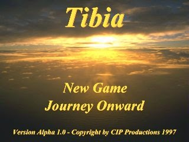
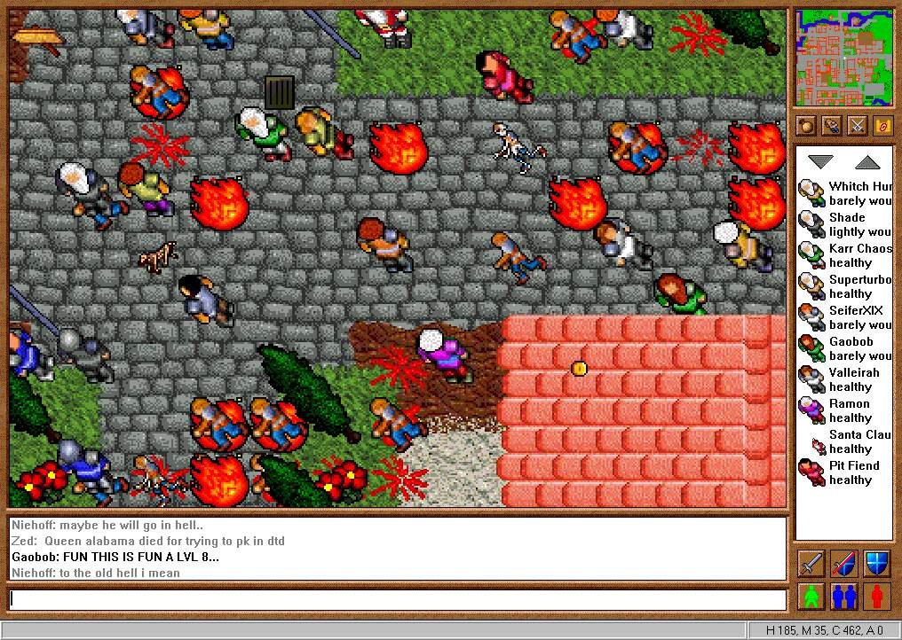
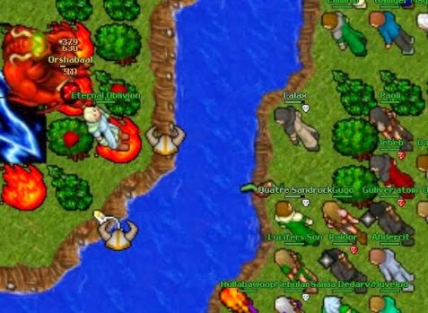

Hístoria Do Tibia
Transcrito por Matheus Macedo
Como Surgiu o Tibia ?
Tibia foi um dos primeiros MMORPG com interface gráfica do mundo, lançado em 1997. A sua produção, no entanto, começou em 1995, quando três estudantes de programação decidiram criar um projeto de RPG on-line, usando o potencial da Internet para angariar jogadores. O objetivo deles era criar um RPG com interface gráfica, diferente dos projetos de texto que eram populares na é
O projeto de desenvolvimento do game começou em 1996, quando foram criadas a programação básica do jogo, a construção gráfica dos itens dele e o protocolo de comunicação entre servidor e game. No mesmo ano, uma versão base em Linux já estava rodando e os programadores já podiam testar a movimentação dos personagens pelos vários níveis do game.
Primeiro imagem tema do Jogo

No fim do ano, o jogo já tinha tudo aquilo que era necessário para o lançamento: possibilidade de dar nomes individuais aos personagens, habilidades para pegar, mover e largar itens, possibilidade de conversar, usar itens e gerenciar contas. O lançamento aconteceu logo no dia 7 de janeiro de 1997, com um servidor localizado na Universidade de Ratisbona, na Alemanha.
O primeiro jogador de Tibia, no entanto, só chegou ao game em julho de 1997, 6 meses depois do lançamento. Seu nome era Albe e ele encontrou o game pelos motores de busca da época. O primeiro NPC do jogo, Sam (que existe até hoje na cidade de Thais), foi implementado pouco antes disso, junto dos primeiros monstros (três versões, os trolls, as spiders e os cyclops, todos presentes no jogo ainda).
Primeira Interface Gráfica

Aos poucos, o game foi ganhando popularidade e foi crescendo. Conforme novos jogadores chegavam, o código-fonte do jogo foi se tornando mais instável e, em 1998, foi necessário reescrevê-lo do zero, o que levou um ano completo para finalizar.
Além disso, aos poucos, o número de jogadores presentes no game aumentou, o que fez com que sempre houvesse alguém on-line no servidor. Isso passou a exigir servidores melhores, o que fez com que o time precisasse de um novo servidor. Eventualmente, eles conseguiram uma parceria com a Gameloft, que hospedou-o por algum tempo em troca de banners de anúncios no site oficial de Tibia, mas acabaram encerrando a parceria pouco depois.
Qual Foi o Auge do Jogo ?
O game ganhou seu auge de adesões de novos jogadores entre os anos de 2002 e 2005, quando acabou expandindo seus servidores para outros países, incluindo o Brasil. Por aqui, o jogo teve um servidor próprio até 2005, chamado Tenebra (ele foi inaugurado em 2004).
Essa foi a época de mais jogadores de Tibia aqui, no Brasil, ainda que o game tenha se mantido bem popular depois desse período, quando não tinha mais o servidor nacional.
Invasão
Nessa imagem vemos uma das maiores invasões feitas no jogo, todos os jogadores nesse dia se reuniu pra matar o tão poderoso Orshabaal.
Ainda Existem pessoas que jogam Tibia ?
Sim, ainda hoje o game é jogado por bastante gente. Existem pessoas, por exemplo, que compram cartas, itens e contas em sites como o Dragon Fire Gateway, para poder ter algumas vantagens dentro do jogo.
Tibia é gratuito, ainda que tenha a possibilidade de conseguir comprar uma conta Premium e pagar para poder jogar com certas vantagens dentro do jogo. Hoje, a comunidade ainda é muito animada e conta com apoio em fóruns pelo Brasil, comentando sobre os novos lançamentos e apoiando os jogadores novatos que queiram entrar na onda.
Agora que você já sabe como surgiu Tibia, quais foram seus atrativos e se ainda existem pessoas que jogam o game regularmente, já pode decidir se vai querer voltar a jogá-lo um pouquinho, nem que seja para poder matar as saudades com os seus amigos. Além disso, se você nunca jogou, que tal começar agora? É claro que parte da diversão do começo dos anos 2000 nunca voltará, mas ainda há tempo de aproveitar o game.
Gostou do nosso conteúdo? Então, mande este artigo no grupo de amigos no WhatsApp que jogaram Tibia com você na adolescência!